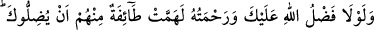
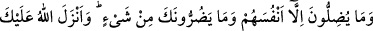
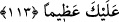

medfûn olan Şeyh Vefâ’ya, padişah II. Beyâzıt kızlarının nikahını kıyması için seksen
bin dirhem hediye olarak gönderdi. Bunun üzerine Şeyh Vefâ: “Dünya içindekilerle
birlikte bana verilse bunu yapamam.” diye cevap verdi.
Niçin?” diye sorulduğunda: “Çünkü benim kuşluk vaktine kadar yaptığım virdlerim
var, onlardan bir an bile ayrılamam. Sonra kuşluk vaktinden öğleye kadar uyurum. Bu
zamanı da terketmem. Öğleden sonraya gelince siz de bundan hoşlanmazsınız. Çünkü
gündüz vakti geçirilmiş olur” karşılığını verdi.
Hakk’a tâlip olanın gecesi ve gündüzü böyledir. Dünyâ, fanîdir. Hayy ve Bakî olan
Allah Teâlâ’dır. O’nu talep etmek gerekir.
113- Allah’ın sana lütfu ve esirgemesi olmasaydı, onlardan bir güruh seni
saptırmaya yeltenmişti. Onlar yalnızca kendilerini saptırırlar, sana hiçbir zarar
veremezler. Allah sana Kitâb’ı ve hikmeti indirmiş ve sana bilmediğini öğretmiştir.
Allah’ın lütfu sana gerçekten büyük olmuştur.
“Allah’ın” ismet ve muhâfazası ile “sana lütfu ve esirgemesi olmasaydı, onlardan
bir güruh” yâni Tu’me’yi müdâfaa eden Zaferoğulları’ndan bir grup “seni saptırmaya
yeltenmişti” Onlar suçlunun kendi adamları olduğunu bildikleri halde karıştırarak doğru
hüküm vermekten saptırmaya yeltendiler. “Onlar yalnızca kendilerini saptırırlar.”
Çünkü yaptıkları şeyin vebâli kendilerine aittir. “Sana hiçbir zarar veremezler.” Allah
seni korur. Senin aklına gelen şey, işin zâhirini esas almaktır. Yoksa Allah’ın
hükmünden sapma değildir. “Allah sana Kitâb’ı” Kur’ân’ı “ve hikmeti” yâni
Kur’an’daki hükümleri “indirmiş.” Sana helâli, haramı öğretmiştir. “ve sana” gaybı ve
gizli işleri vahyederek o vakte kadar “bilmediğini öğretmiştir. Allah’ın lütfu sana
gerçekten büyük olmuştur.” Çünkü peygamberliğin genel ve önderliğin tam olmasından
üstün bir lütuf yoktur. Seni koruması ve bilmediğin şeyleri öğretmesi de bu büyük
lütfundandır.
Haddâdî tefsîrinde şöyle demiştir: Bu âyetler, bir kimsenin işin hakîkatini bilmeden
haklı veyâ haksız olduğunu savunmasının câiz olmadığına delâlet etmektedir. Yine
hasımlardan biri müslüman diğeri kâfir olduğunda, hâkimin onlardan birine meyletmesi
câiz değildir. Bir insanın elinde çalıntı mal bulunursa bu onun aleyhine hüküm
verilmesini gerektirmez.
Şunu bil ki bu âyet bir çok fazîletleri bir araya toplamıştır. Hayrın faydasının isteyene